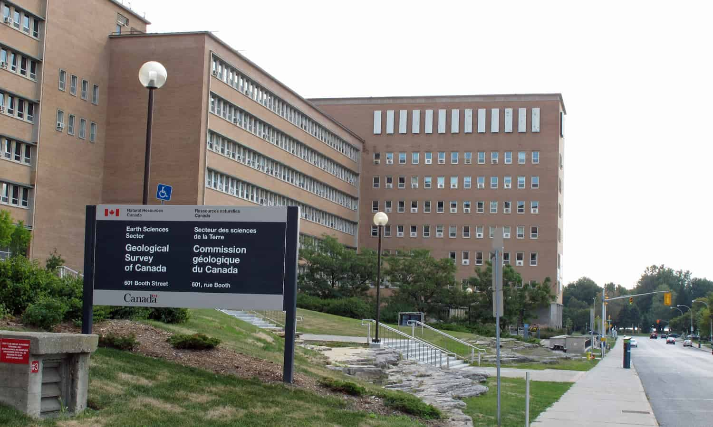

Natural Resources Canada - Database Developer and GIS Support
Introduction
For my first two co-op terms I was hired by Natural Resources Canada for the role of Database Developer and GIS Support. My job responsibilities expanded rapidly and by the end of my 8 months I was completing the duties of a full-stack developer.
Employer Information
At Natural Resources Canada (NRCan), a department of the federal government, there are a variety of projects currently being run that have vastly different work processes and goals. I was located in Ottawa where I worked with a team of scientists and developers. My section of NRCan was the Lands and Minerals sector where a number of projects related to the geology of Canada were taking place. These different research efforts make use of everything from scripts to process geospatial data, to AI and Cloud Computing testing and development.
Job Description
I was stationed in the Lands and Minerals sector of NRCan where my team was working on developing a public and commercial geospatial database and web application as part of the Canada3D project.
In the first 4 months of my job, I was working as a backend database developer. My duties consisted of maintaining a PostGreSQL (PostGIS) database and maintaining/updating the scripts related to the database and the data that was being used. When initially starting on the project I was tasked with updating our data entry and loading form system to enable easier use by geologists. This consisted of writing a system of Python scripts to dynamically modify our old map data XMLs as well as create new XSD and SPS (schema files) format files for third party viewing software to make use of. This progressed to the expansion of my responsibilities to include the modification and creation of an updated Python API to load XML files into our databases. The Python work was centered around ETL (extract, transform, load) of XML and shapefile map data of Canada as well as using REST API requests used to create and connect layers in a Geoserver (spatial data layering service) instance to the PostgreSQL database. Due to the geospatial aspect of the job I was able to use my GIS knowledge and skills learned through my GIS course at the University of Guelph to update projections and spatial errors in Geoserver map layers and shapefiles as required.
During the second term of my co-op I took on an increased role in the projects front-end development where I worked on the redesign of a web application we were building for the Canada3D project (set to go live 2020). Web development was almost entirely new to me, leading me to do a significant amount of learning both inside and outside of work hours using online tools. I was required to create Handlebars templates to dynamically load page content via server side operations that would then be pushed to the client. I also had to work on the scientific portion of the web application where I had to change the implementation of the OpenLayers API (geospatial image tiling) to improve efficiency and usefulness of our online map explorer. Many changes that I was tasked with in the online map explorer javascript code were direct reflections of the changes made to our geospatial database and Geoserver that I had made/was making in the project backend.
Learning Goals
Summer 2019
The first goal I set for myself was to gain knowledge and experience using GIS database systems. I specifically was hoping to learn about the backend technologies used to build geospatial data storage systems in order to benefit me while I work to attain my minor in GIS and Environmental Analysis. Within the first few weeks of working at Natural Resources Canada, I was able to work on updating some of the database creation and maintenance scripts that were written in Python and SQL. Within a short time frame, I was given the responsibility of running all database related operations for the team as well as taking on more complex data loading processes.
Two of my goals during this work term were related to improving skills based around team operations. The first of these two goals was to gain a greater understanding of multi-disciplinary team-based work environments. I decided this should be a large focus of my learning while at Natural Resources Canada because of how rarely I get the opportunity to work with others who are not software developers. Each week we would hold a team meeting where we would discuss all aspects of the project whether they be political, development-related, external, or administrative. This provided me with an environment where I was able to learn about the differing roles and responsibilities of my colleagues that are related to their positions. I was able to actively use this knowledge to improve the quality of the assets I was providing for group discussion to better suit the needs of others on the team, such as providing live Node.js hosted demos of updates instead of operating out of a basic text change log. The second group-based goal I had was to improve the quality of my technical documentation with regards to both program comments within scripts and full system documentation. I was given many opportunities throughout the work term to create new formal and informal documentation for the Canada3D database project that I was working on. Through my experiences in previous software design courses, I was able to create high-quality documentation to be read and reviewed by both other developers and scientists on the project team. The feedback I received from my colleagues helped me to improve the quality and scope of my formal documentation that was later placed on the team’s project wiki.
The final goal of my work term revolved around the GIS portion of my position. I wanted to greatly improve my scientific literacy of GIS specific information to ensure accuracy of the data I was working with in the PostGreSQL database, as well as to benefit me in my future GIS courses. I would often be given tasks that involved research and analysis of bugs related to GIS projections or errors in our data parsing logic that allowed me to greatly expand my knowledge of geospatial functions and data types. This experience became a vital part of my role on the project team when I used this newly acquired knowledge to improve the efficiency and functionality of our mapping layer system on Geoserver.
Fall 2019
During my second work term I oriented my goals around improving my soft skills and my use of team project software. The first goal I set for myself was to network within the industry in order to expand my number of connections and to market myself for future job opportunities. I found that being positioned within a section of government with very few computer scientists made it challenging to network with others at times, however, I used my minor in GIS and Environmental Analysis to spark conversations that enabled me to make connections throughout the geophysics group at Natural Resources Canada. I plan on maintaining and using this network of contacts to seek out new academic and business opportunities in the future.
A second soft skill goal I made was to improve my leadership abilities by taking a larger role within the development team by leading the efforts on new features or deadlines within the Canada3D Project. I would often make use of my experience managing co-op students at a previous position to improve the quality of discussions I led. During the team’s weekly meetings I made a point to voice my opinion more often and pitch new ideas when the timing was appropriate, which led to my team members depending on me to expand my responsibilities and contribute to new areas of web application development on the front-end of the project.
My final work term goal, to gain a greater understanding of team-based development software systems, was potentially one of the most valuable learning experiences I had at Natural Resources Canada. The development team I was on used GitLab as a codebase and documentation tool as well as command-line Git tools. I was able to take my rather small knowledge of Git and expand it to a professional level with the help of my fellow developers Roman and Gabriel. By the end of my work term, I could successfully handle a series of once detrimental Git branching situations as well as effectively use Markdown to display all of my formal documentation as GitLab wiki pages for easier access.
Conclusion
My time at Natural Resources Canada was of great benefit to my career aspirations in both computing and GIS. Over the course of these 8 months, I was able to greatly expand my knowledge of both back-end and front-end development processes while working on a team where everyone was friendly and dedicated to the work we were completing. My position at NRCan provided me with the rare opportunity to learn both programming and geographic industry practices in a modern development environment.
Acknowledgments
At Natural Resources Canada there were many members of the Canada3D team that offered continuous assistance and support. I would like to thank Boyan Brodaric, Dianne Paul, Roman Mitura and Gabriel Huot-Vézina for providing me with the tools and encouragement I needed to be successful.